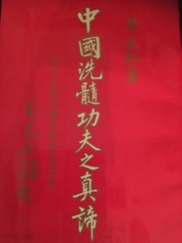

Private Instruction · Mexico
洗髓 · 房中术 · 亲身传授
照片
Private Instruction · Mexico
Sifu Ajay Kumra travels to Mexico to teach Shih Shui (bone marrow washing, Xi Sui Gong 洗髓功) and Taoist lovemaking (fang chung shu) privately and in person. He comes to you: lessons take place where you are, one-on-one or in a small group.
这两门功法相辅相成。洗髓功属于内功：特定的呼吸方法、对深层结构的强化以及有引导的气的运行，其核心是对性能量的修炼。道家房中术则是保存、转化并运行同一种能量——精——而不是轻易耗散它的古典修炼之术。
洗髓功流传甚广，却多被错误仿传；以此名义流传的内容，很多是由从未得到过纠正的人教错的。在这里，它依旧按照历来的方式传承：亲身面授，师父传弟子，循序渐进，每个细节都经过纠正，一如前辈师父们的教法。它不是从书本上学来的。
Ajay Kumra 师父习武 20 年、执教 10 年，曾在美国、泰国和中国授课。他师从小九天武道体系掌门人麦克杰模（James McNeil）大师。
麦克杰模大师自 1984 年起在台北随乔长虹（Chiao Chang-Hung）大宗师习艺，直至乔宗师 2001 年辞世；在此之前，他还师从“神手”许鸿基（Hsu Hong-Chi）大师。正是乔宗师决定将洗髓功传出少数武术弟子之外。
麦克杰模（McNeil）大师的房中术，学自许鸿基大师、黄师父，以及深山中四位精通此道的女性。
请通过联系表格或发送邮件至 info@l9hkungfu.com，说明您所在的地点和想学的内容，具体细节将与您本人商定。
Ajay 师父可前往世界任何地方的学生所在之处教学，也在美国加州桑蒂（圣地亚哥县）授课。
Can I learn marrow washing (Xi Sui Gong) in Mexico?
Yes. Sifu Ajay Kumra travels to Mexico to teach Shih Shui privately and in person. Visits are arranged individually by email.
Is Taoist lovemaking taught in Mexico?
是的，私下传授给以修炼为目的的成年人。通常与洗髓功一起传授，因为两者直接相通。
可以在线学习吗？
不可以。洗髓功与道家房中术只亲身传授，以便纠正每个细节。
需要伴侣吗？
不需要。男女皆可学习，有伴侣或单身均可。
如何安排来访？
通过电子邮件个别商定。请通过联系表格或发送邮件至 info@l9hkungfu.com，说明您所在的地点以及想学的内容。